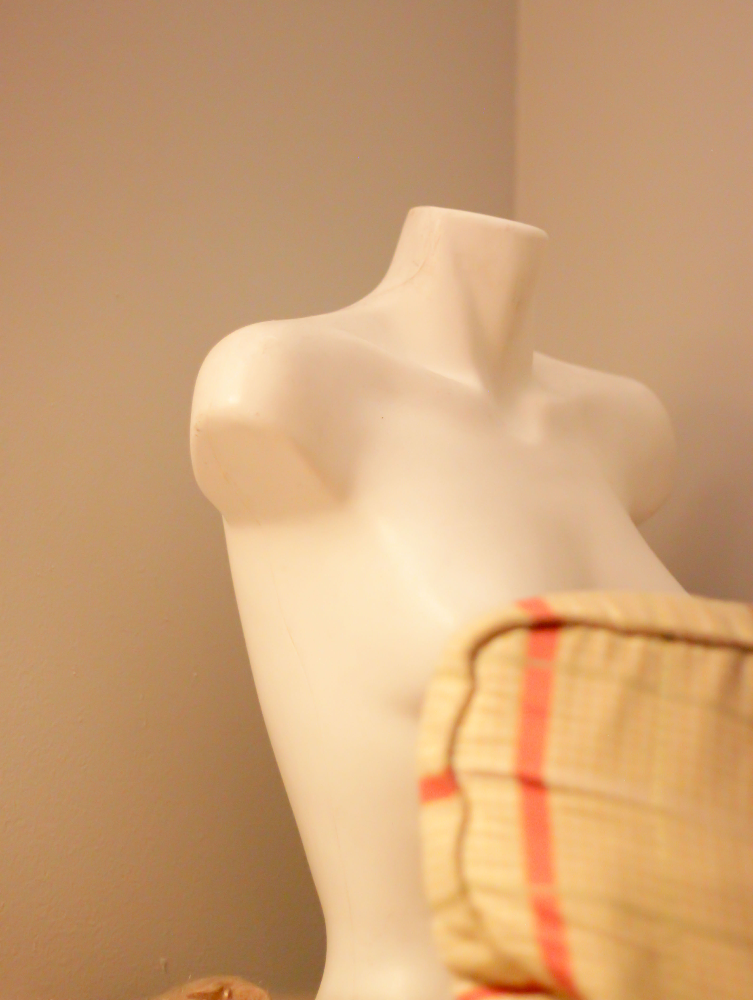
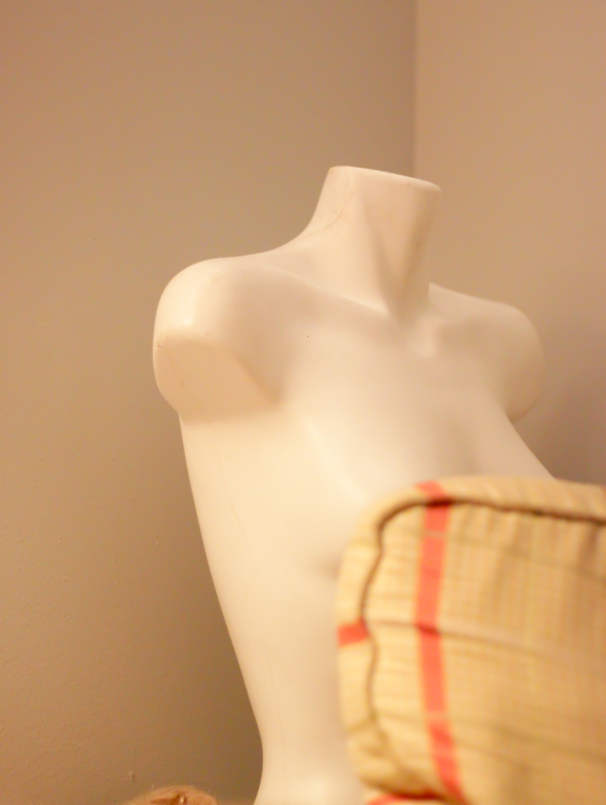
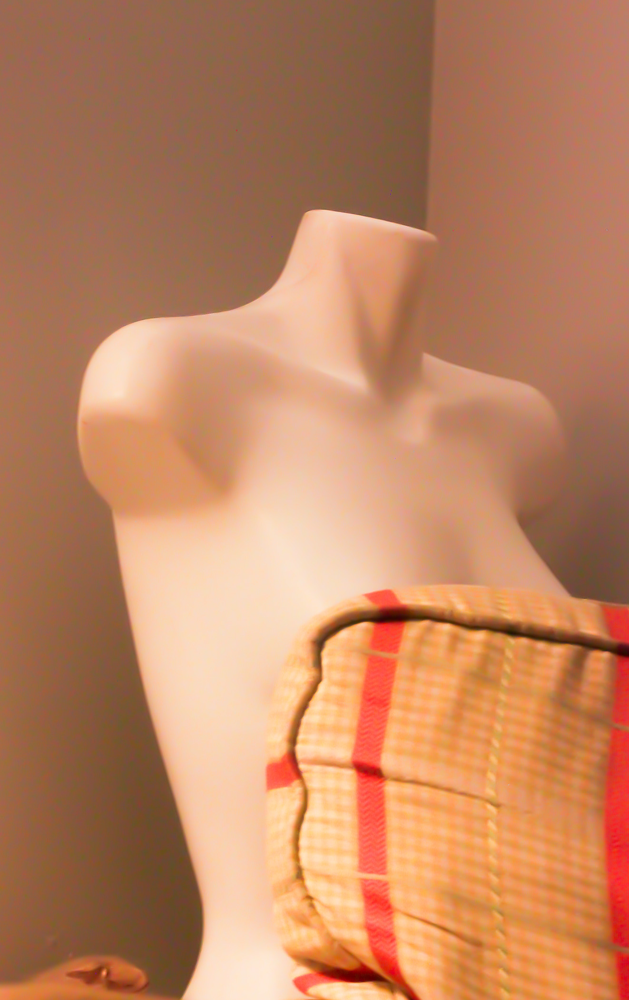

Before — underexposed; not straight
After — exposure balanced; cropped
| Before | After |
|---|---|
|
 Before — underexposed |
 After — exposure balanced; straightened |
| Before | After |
|---|---|
|
Before — underexposed; not straight |
 After — exposure balanced; cropped |